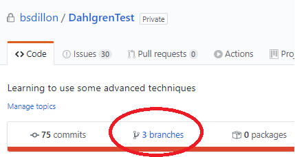
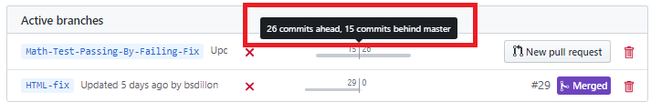
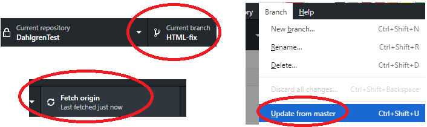
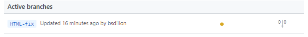

When a branch has been created for a feature and then closed it hangs around until someone closes it. When this happens, that branch becomes outdated in comparison to the master trunk. This process will update the branch so it can be closed.
From the repository's main page, select the branches tab to show
what branches exist and how far out of date they are from the
master.

This view shows both changes in master that need to be updated.
Note that the Math-Test branch has 26 commits in its own branch
that need to be merged with master. At the same time, master has
had 15 new commits that need to be merged with Math-Test. A
long-living branch will become outdated and needs to be returned
to the master.

Once a branch has been identified, from desktop move to that branch.
In the menu select Branch > Update from Master. Don't forget to fetch
origin to get all those updates. Once this is done, any change from
master will also be available on this branch.

If you refreshed the list of branches online, you will see that
the branch is now caught up with the master branch. At this point
the branch could be deleted.
